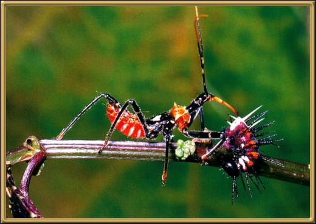

Photographer: Unknown
Assassin Bugs are, I think, known through a large part of the world, and most definitely here in Australia. They have a pointed tubular sort of mouth called a 'rostrum' that makes a very good stabbing weapon, much like a sword, which it apparently uses very efficiently!